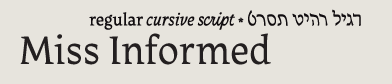
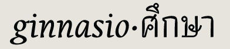
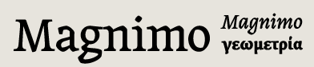
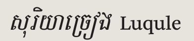
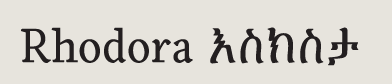

Nicole Fally (Austria/Germany) email
web
Miss Informed specimen
RoP

Riccardo De Franceschi (Italy) email
web
Ginnasio specimen
RoP
Mary Louise Killen (USA) email
web
Acadie & Yala specimen
RoP
Neelakash Kshetrimayum (India) email
web
Frijky specimen
Karolina Lach (Poland/USA) email
web
Sora specimen

Aoife Mooney (Ireland) email
web
Magnimo specimen
RoP
Octavio Pardo (Spain) email
web
Cabriole specimen
Steve Ross (Canada) email
web
Yukatek specimen
RoP

Zachary Quinn Scheuren (USA) email
web
Souriya Chrieng & Luqule specimen

Sarah Schumacher (USA) email
web
Rhodora & Eskesta specimen
Gunnar Vilhjalmsson (Iceland) email
web
Germain specimen
Marc Weymann (Liechtenstein/Switzerland) email
web
Formal specimen
Thanks!
We are all very grateful to a lot of people who helped to make this extraordinary year possible.
We would like to thank the tutors and staff of the Department of Typography & Graphic Communication, University of Reading, especially Martin Andrews, Gerry Leonidas, James Mosley, Fiona Ross, Michael Twyman, and Gerard Unger.
We couldn’t have done it without all our families and friends, either!
Typeface designs © the respective authors, 2000–2010.
Website design and production © David Březina, 2007–2010.
The typeface used in the headline is Ronnia by TypeTogether.
Last update: 7 September 2010 — RSS feed